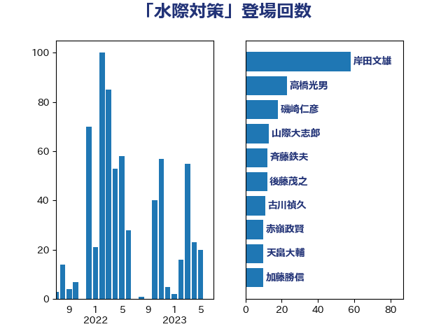

単語「水際対策」

| 岸田文雄 | 自由民主党 | 58 回 |
| 高橋光男 | 公明党 | 23 回 |
| 磯崎仁彦 | 自由民主党 | 18 回 |
| 山際大志郎 | 自由民主党 | 13 回 |
| 斉藤鉄夫 | 公明党 | 12 回 |
| 後藤茂之 | 自由民主党 | 12 回 |
| 古川禎久 | 自由民主党 | 11 回 |
| 赤嶺政賢 | 日本共産党 | 10 回 |
| 天畠大輔 | れいわ新選組 | 10 回 |
| 加藤勝信 | 自由民主党 | 10 回 |
| 佐藤英道 | 公明党 | 10 回 |
| 藤川政人 | 自由民主党 | 9 回 |
| 宮路拓馬 | 自由民主党 | 9 回 |
| 竹内真二 | 公明党 | 8 回 |
| 小川淳也 | 立憲民主党 | 8 回 |
| 吉田統彦 | 立憲民主党 | 8 回 |
| 鈴木敦 | 国民民主党 | 6 回 |
| 城井崇 | 立憲民主党 | 6 回 |
| 齋藤健 | 自由民主党 | 5 回 |
| 鈴木俊一 | 自由民主党 | 5 回 |
| 石井正弘 | 自由民主党 | 5 回 |
| 熊谷裕人 | 立憲民主党 | 5 回 |
| 江田憲司 | 立憲民主党 | 5 回 |
| 森山浩行 | 立憲民主党 | 5 回 |
| 柚木道義 | 立憲民主党 | 5 回 |
| 林芳正 | 自由民主党 | 5 回 |
| 末松信介 | 自由民主党 | 5 回 |
| 小野田紀美 | 自由民主党 | 5 回 |
| 仁木博文 | 無所属 | 5 回 |
| 青木愛 | 立憲民主党 | 4 回 |
| 長浜博行 | 無所属 | 4 回 |
| 谷公一 | 自由民主党 | 4 回 |
| 石井拓 | 自由民主党 | 4 回 |
| 清水真人 | 自由民主党 | 4 回 |
| 河西宏一 | 公明党 | 4 回 |
| 本田顕子 | 自由民主党 | 4 回 |
| 吉川元 | 立憲民主党 | 4 回 |
| 住吉寛紀 | 日本維新の会 | 4 回 |
| 野田国義 | 立憲民主党 | 3 回 |
| 野上浩太郎 | 自由民主党 | 3 回 |
| 西村康稔 | 自由民主党 | 3 回 |
| 西岡秀子 | 国民民主党 | 3 回 |
| 神谷裕 | 立憲民主党 | 3 回 |
| 石垣のりこ | 立憲民主党 | 3 回 |
| 石原宏高 | 自由民主党 | 3 回 |
| 石井章 | 日本維新の会 | 3 回 |
| 浮島智子 | 公明党 | 3 回 |
| 沢田良 | 日本維新の会 | 3 回 |
| 松野明美 | 日本維新の会 | 3 回 |
| 杉尾秀哉 | 立憲民主党 | 3 回 |
| 岬麻紀 | 日本維新の会 | 3 回 |
| 山崎正恭 | 公明党 | 3 回 |
| 山口壯 | 自由民主党 | 3 回 |
| 山下貴司 | 自由民主党 | 3 回 |
| 小西洋之 | 立憲民主党 | 3 回 |
| 小沼巧 | 立憲民主党 | 3 回 |
| 小宮山泰子 | 立憲民主党 | 3 回 |
| 宮本徹 | 日本共産党 | 3 回 |
| 宮崎政久 | 自由民主党 | 3 回 |
| 大家敏志 | 自由民主党 | 3 回 |
| 古川康 | 自由民主党 | 3 回 |
| 中川康洋 | 公明党 | 3 回 |
| 馬場伸幸 | 日本維新の会 | 2 回 |
| 長友慎治 | 国民民主党 | 2 回 |
| 金子恵美 | 立憲民主党 | 2 回 |
| 野村哲郎 | 自由民主党 | 2 回 |
| 西村明宏 | 自由民主党 | 2 回 |
| 藤巻健太 | 日本維新の会 | 2 回 |
| 葉梨康弘 | 自由民主党 | 2 回 |
| 緒方林太郎 | 無所属 | 2 回 |
| 石橋通宏 | 立憲民主党 | 2 回 |
| 片山大介 | 日本維新の会 | 2 回 |
| 漆間譲司 | 日本維新の会 | 2 回 |
| 源馬謙太郎 | 立憲民主党 | 2 回 |
| 浅田均 | 日本維新の会 | 2 回 |
| 泉田裕彦 | 自由民主党 | 2 回 |
| 永岡桂子 | 自由民主党 | 2 回 |
| 水野素子 | 立憲民主党 | 2 回 |
| 梅谷守 | 立憲民主党 | 2 回 |
| 枝野幸男 | 立憲民主党 | 2 回 |
| 杉本和巳 | 日本維新の会 | 2 回 |
| 新妻秀規 | 公明党 | 2 回 |
| 山本剛正 | 日本維新の会 | 2 回 |
| 山岡達丸 | 立憲民主党 | 2 回 |
| 山口那津男 | 公明党 | 2 回 |
| 小池晃 | 日本共産党 | 2 回 |
| 大野泰正 | 自由民主党 | 2 回 |
| 塩田博昭 | 公明党 | 2 回 |
| 倉林明子 | 日本共産党 | 2 回 |
| 井上哲士 | 日本共産党 | 2 回 |
| 中島克仁 | 立憲民主党 | 2 回 |
| 上田清司 | 国民民主党 | 2 回 |
| 三浦信祐 | 公明党 | 2 回 |
| 高木陽介 | 公明党 | 1 回 |
| 馬淵澄夫 | 立憲民主党 | 1 回 |
| 青山大人 | 立憲民主党 | 1 回 |
| 鈴木貴子 | 自由民主党 | 1 回 |
| 鈴木庸介 | 立憲民主党 | 1 回 |
| 金村龍那 | 日本維新の会 | 1 回 |
| 道下大樹 | 立憲民主党 | 1 回 |
| 近藤和也 | 立憲民主党 | 1 回 |
| 赤澤亮正 | 自由民主党 | 1 回 |
| 藤井比早之 | 自由民主党 | 1 回 |
| 萩生田光一 | 自由民主党 | 1 回 |
| 茂木敏充 | 自由民主党 | 1 回 |
| 稲富修二 | 立憲民主党 | 1 回 |
| 神谷政幸 | 自由民主党 | 1 回 |
| 礒崎哲史 | 国民民主党 | 1 回 |
| 石井苗子 | 日本維新の会 | 1 回 |
| 石井啓一 | 公明党 | 1 回 |
| 田野瀬太道 | 無所属 | 1 回 |
| 田村まみ | 国民民主党 | 1 回 |
| 田所嘉徳 | 自由民主党 | 1 回 |
| 田名部匡代 | 立憲民主党 | 1 回 |
| 田中健 | 国民民主党 | 1 回 |
| 渡辺猛之 | 自由民主党 | 1 回 |
| 渡辺周 | 立憲民主党 | 1 回 |
| 清水貴之 | 日本維新の会 | 1 回 |
| 浜地雅一 | 公明党 | 1 回 |
| 浅野哲 | 国民民主党 | 1 回 |
| 泉健太 | 立憲民主党 | 1 回 |
| 池畑浩太朗 | 日本維新の会 | 1 回 |
| 江島潔 | 自由民主党 | 1 回 |
| 横沢高徳 | 立憲民主党 | 1 回 |
| 森屋隆 | 立憲民主党 | 1 回 |
| 梅村聡 | 日本維新の会 | 1 回 |
| 柴田巧 | 日本維新の会 | 1 回 |
| 松野博一 | 自由民主党 | 1 回 |
| 本田太郎 | 自由民主党 | 1 回 |
| 木原誠二 | 自由民主党 | 1 回 |
| 朝日健太郎 | 自由民主党 | 1 回 |
| 日下正喜 | 公明党 | 1 回 |
| 斎藤アレックス | 国民民主党 | 1 回 |
| 志位和夫 | 日本共産党 | 1 回 |
| 徳永エリ | 立憲民主党 | 1 回 |
| 川田龍平 | 立憲民主党 | 1 回 |
| 川合孝典 | 国民民主党 | 1 回 |
| 島村大 | 自由民主党 | 1 回 |
| 山田宏 | 自由民主党 | 1 回 |
| 山本順三 | 自由民主党 | 1 回 |
| 山本博司 | 公明党 | 1 回 |
| 山下雄平 | 自由民主党 | 1 回 |
| 山下芳生 | 日本共産党 | 1 回 |
| 小田原潔 | 自由民主党 | 1 回 |
| 小林鷹之 | 自由民主党 | 1 回 |
| 宮崎勝 | 公明党 | 1 回 |
| 奥下剛光 | 日本維新の会 | 1 回 |
| 堀場幸子 | 日本維新の会 | 1 回 |
| 堀井巌 | 自由民主党 | 1 回 |
| 吉井章 | 自由民主党 | 1 回 |
| 勝俣孝明 | 自由民主党 | 1 回 |
| 加藤明良 | 自由民主党 | 1 回 |
| 佐藤正久 | 自由民主党 | 1 回 |
| 伊藤孝恵 | 国民民主党 | 1 回 |
| 伊藤俊輔 | 立憲民主党 | 1 回 |
| 伊佐進一 | 公明党 | 1 回 |
| 今枝宗一郎 | 自由民主党 | 1 回 |
| 井坂信彦 | 立憲民主党 | 1 回 |
| 中村裕之 | 自由民主党 | 1 回 |
| 上川陽子 | 自由民主党 | 1 回 |
| 三宅伸吾 | 自由民主党 | 1 回 |
| こやり隆史 | 自由民主党 | 1 回 |